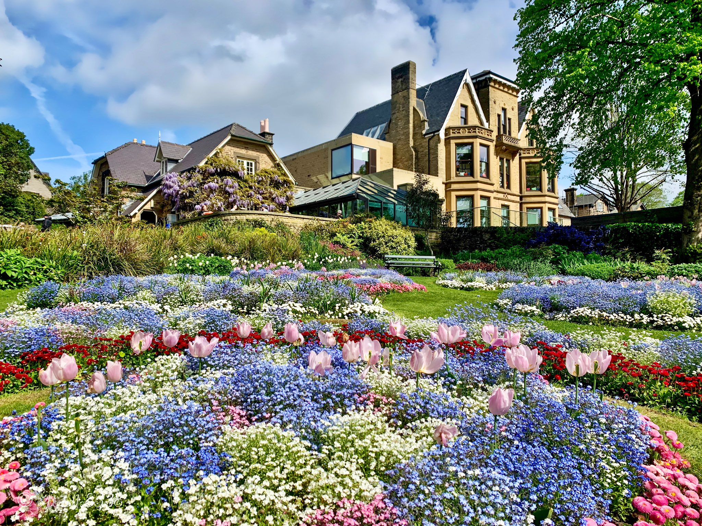

☰
Home
Food & Drink Vendors
Picnic Locations
Quiz
Contact
Accessibility
Legal and Security
Design
Test Your Knowledge!
Can you guess all about Sheffield's best picnic spots?
Sheffield Picnic Locations Quiz
Question 1: What's Your Ideal Picnic Spot?
Weston Park
Crookes Valley Park

Botanical Gardens
Endcliffe Park
Question 2: Which museum located near Weston Park is free to visit?
Weston Park Museum
Kelham Island Museum
Weston Park Museum
Sheffield Industrial Museum
Question 3: Which flower is mentioned in the fun fact as the best spot in the springtime at the Botanical Gardens?
Botanical Gardens in Spring
Daffodils
Crocuses
Tulips